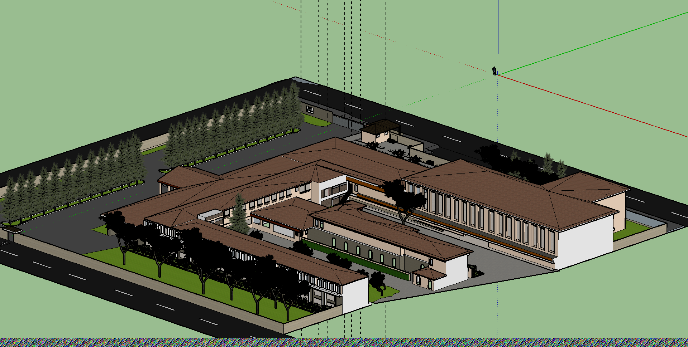
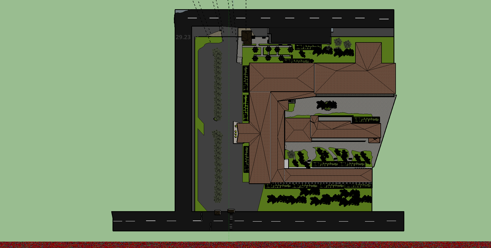

CAMPUS LOCATION
DESIGN REFERENCE


The browser model is converted from the supplied DXF. Some CAD texture and linework details may differ.
Drag to orbit. Scroll or pinch to zoom. Right drag or use two fingers to pan.
Choose a location to learn more, or start the guided tour. Use the viewpoint buttons and zoom controls with a keyboard. Press Escape to stop a tour or close a panel.